Право на
Свободу Маршрута
Автономные катера T-Rex для покорения российских широт. Корпус АМГ5М, дальние маршруты и тяжёлая вода. Ваша личная свобода там, где заканчивается цивилизация.
Линейка T-Rex 2026
Два катера на базе флагманского корпуса АМГ5М. Flybridge — верхняя палуба и открытый горизонт. Cruiser — три каюты и защищённый контур для тяжёлой воды.
T-Rex 44 Flybridge
Верхняя палуба. Панорамный обзор. Контроль над горизонтом.
T-Rex 44 Cruiser
Три каюты. Закрытый контур. Всепогодная защита.
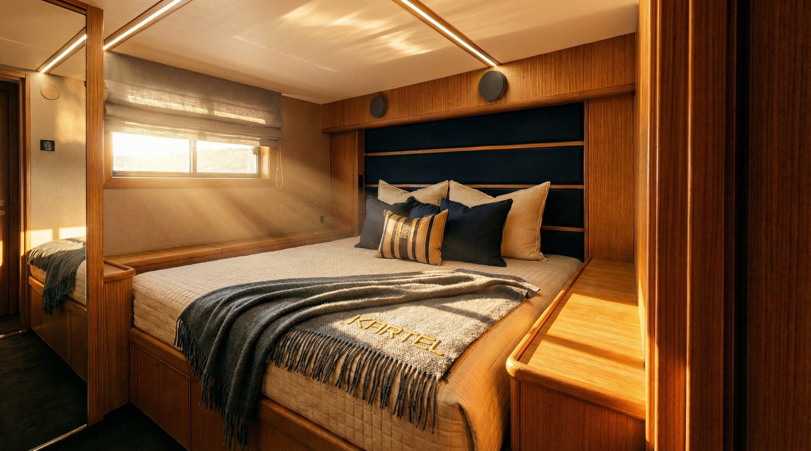
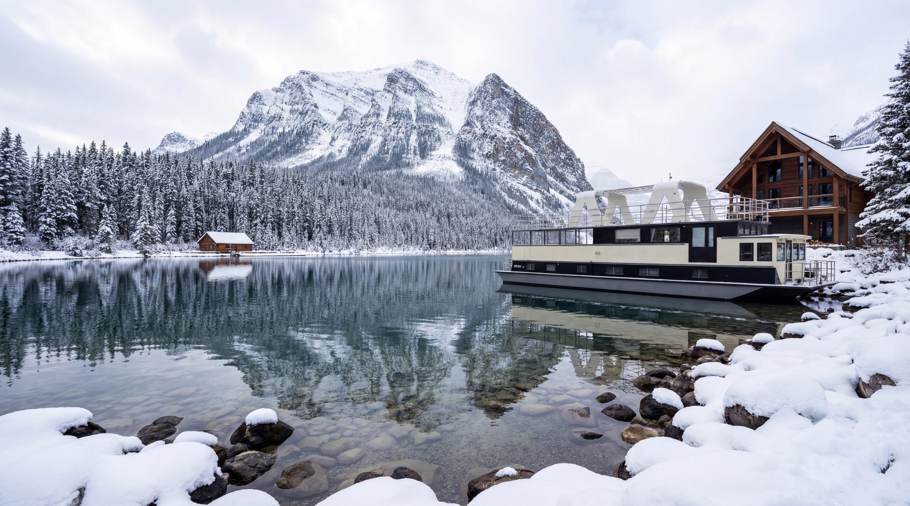
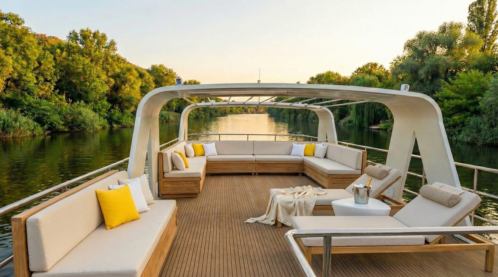
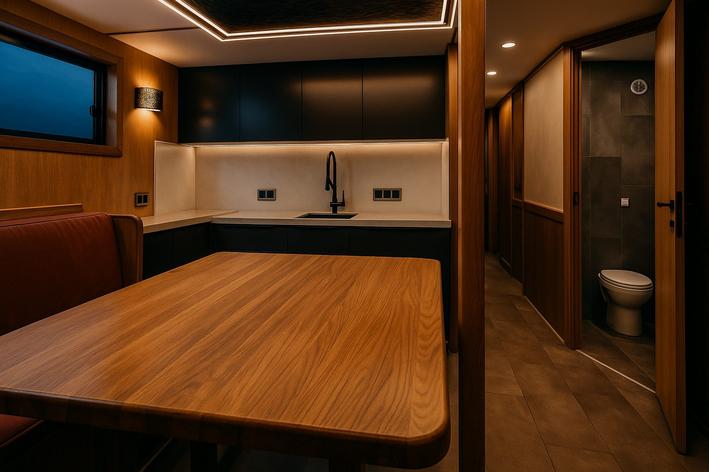
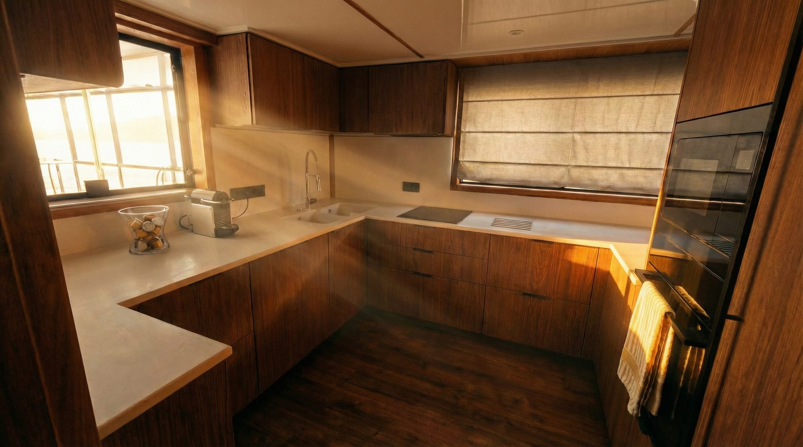
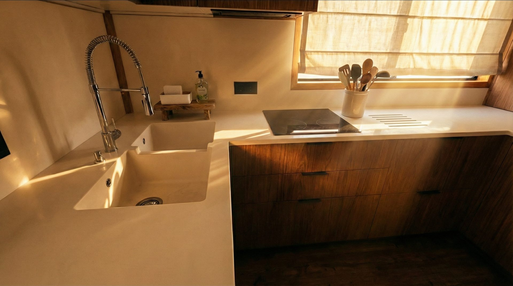


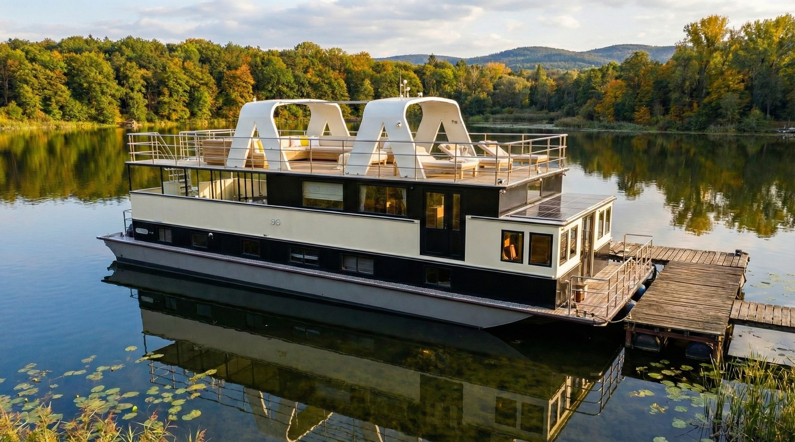


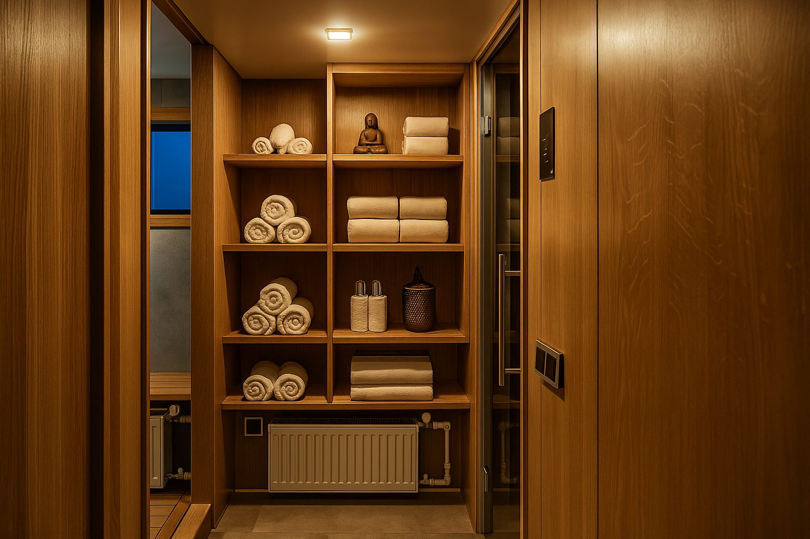


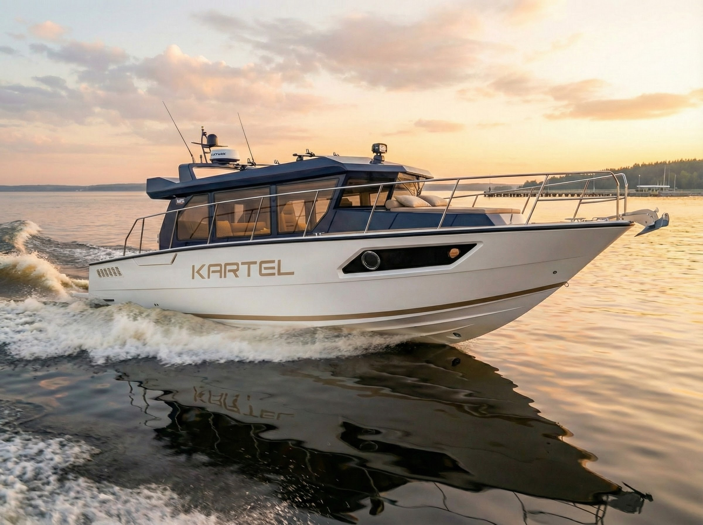
Единый алюминиевый корпус и два направления: Egoist и Specialist — одна платформа, два сценария использования.
T-Rex Egoist
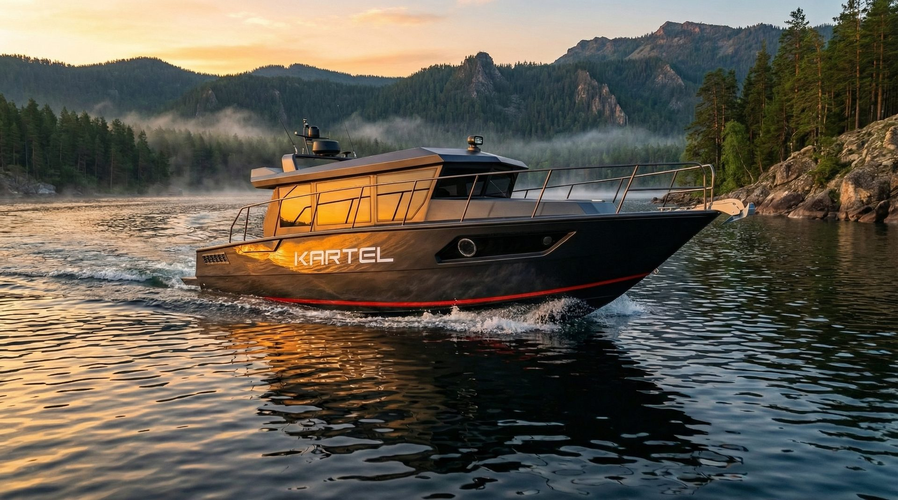
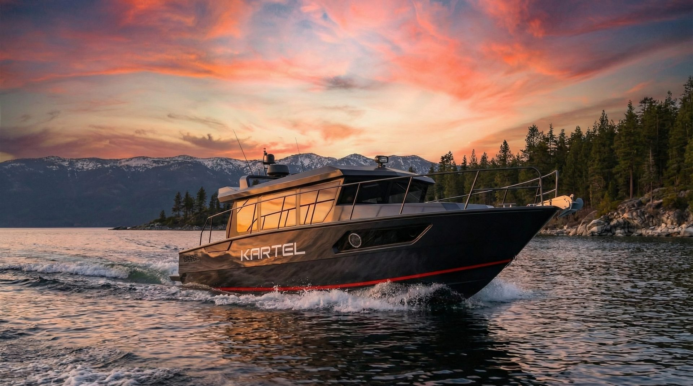

Скорость. Драйв. Личная свобода на воде. Премиальный катер для тех, кто привык задавать маршрут.
T-Rex Specialist


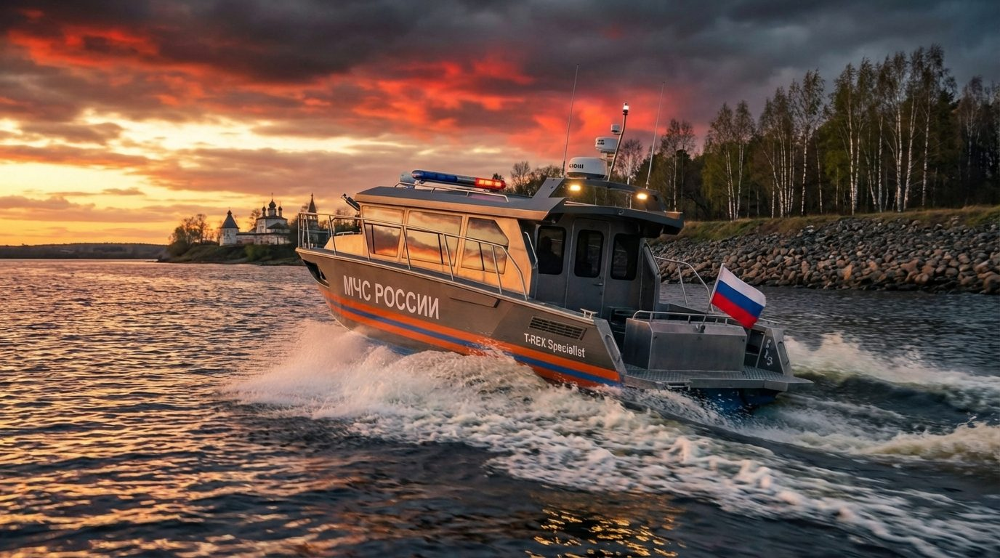
Проверен МЧС России. Профессиональный инструмент для спасательных операций и экстремальных задач в любых условиях.
Более 30 лет судостроительного опыта. От больших кораблей класса Luxury до современных экспедиционных катеров премиум-класса.
Философия KARTEL
Мы создаём новую культуру отдыха на воде. KARTEL — это не просто катера, это право на свободу маршрута: доступ к эмоциям, приключениям и стилю жизни, которые невозможно купить иначе.
Люди не покупают катер ради техники — они покупают новый сценарий жизни: свободу, уверенность и удовольствие от контроля над собственным маршрутом.
Для Себя
Свобода выбора. Ценю своё время, отдых и максимум технических возможностей для нашего климата.
Для Своих
Семья, друзья, патриотизм. Единство духа с РГО и покорением Русского Севера.
Танк во фраке
Мы не полируем пластик. Мы варим авиационный алюминий АМГ5М. Киль 12 мм, борт 5 мм, силовой набор как у боевого катера. Внутри — тишина и комфорт, достойные пятизвёздочного отеля.
Технологии верфиКорабельная Артель
Верфь основана в 1992 году в Саратове на Волге. За три десятилетия мы спроектировали, построили и спустили на воду десятки уникальных судов.
АМГ5М
Авиационный сплав для максимальной прочности
Дуб и Тик
Премиальные натуральные материалы
Made in Russia
Полный цикл производства на Волге
30+ лет
Опыт строительства уникальных судов

Стратегическое партнёрство
ФЛАГМАН «СИБИРСКИЙ ИССЛЕДОВАТЕЛЬ»
18-метровый стальной титан класса «река-море». Создан на тех же стапелях, что и флот KARTEL, для выполнения миссий Русского географического общества в высоких широтах Арктики.
Надёжность
Технологии, одобренные РГО для Крайнего Севера.
Статус
Владение судном экспедиционного класса, а не просто яхтой.
«Сибирский исследователь» встал на зимовку
Экспедиционное судно, ставшее прообразом наших проектов, завершило навигацию. Мы гордимся причастностью к исследованиям РГО и продолжаем строить суда, готовые к таким же суровым испытаниям.
Читать на сайте РГО →Истории маршрутов
Партнёры
Наши координаты
FREQ: 47.2 MHz
MODE: SCAN ▮
GRID: ACTIVE
TARGETS: 2
EST. 1992 · САРАТОВ
МОСКВА, ЦМТ
6-й подъезд, 11 этаж, офис 1148
Гостиница «Международная»
САРАТОВ, ВОЛГА
51.544010, 46.081743
КОРАБЕЛЬНАЯ АРТЕЛЬ
Историческая верфь · EST. 1992